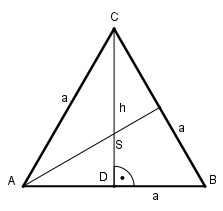
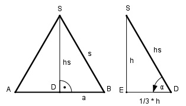

Aufgabe 172 Die Seitenfläche und die Grundfläche einer regelmäßigen geraden dreiseitigen Pyramide verhalten sich wie 2 : 1. Berechnen Sie den Neigungswinkel α einer Seitenfläche gegen die Grundfläche. Grundfläche der Pyramide:

Die Projektionen der Seitenkanten auf die Grundfläche müssen gleich lang sein, da auch die Seitenkanten s gleich lang sind. Dies ist dann der Fall, wenn die Spitze S der Pyramide über dem Schnittpunkt der Höhen = den Winkelhalbierenden im gleichseitigen Dreieck liegt. S teilt die Höhen im Verhältnis 2 : 1. Im Dreieck DBC: Satz von Pythagoras: a2 = h2 + (a/2)2 | -(a/2)2 h2 = a2 - (a/2)2 h2 = a2 - a2/4 3 h2 = --- * a2 |√ 4 a h = --- * √3 2 a * h a * a * √3 AGrundfläche = -------- = -------------- = 2 4 a2 * √3 = ---------- 4 Seitenfläche der Pyramide:
Seitenfläche 2 -------------- = --- | * Grundfläche Grundfläche 1 Seitenfläche = 2 * Grundfläche a * hs a2 * √3 -------- = 2 * ---------- 2 4 a * hs a2 * √3 -------- = --------- | *2 2 2 a * hs = a2 * √3 |:a hs = a * √3 Im rechten Dreieck: 1/3 * h 1/3 * 1/2 * a * √3 cos α = ----------- = ---------------------- = hs a * √3 1 = --- --> α = 80,4° 6